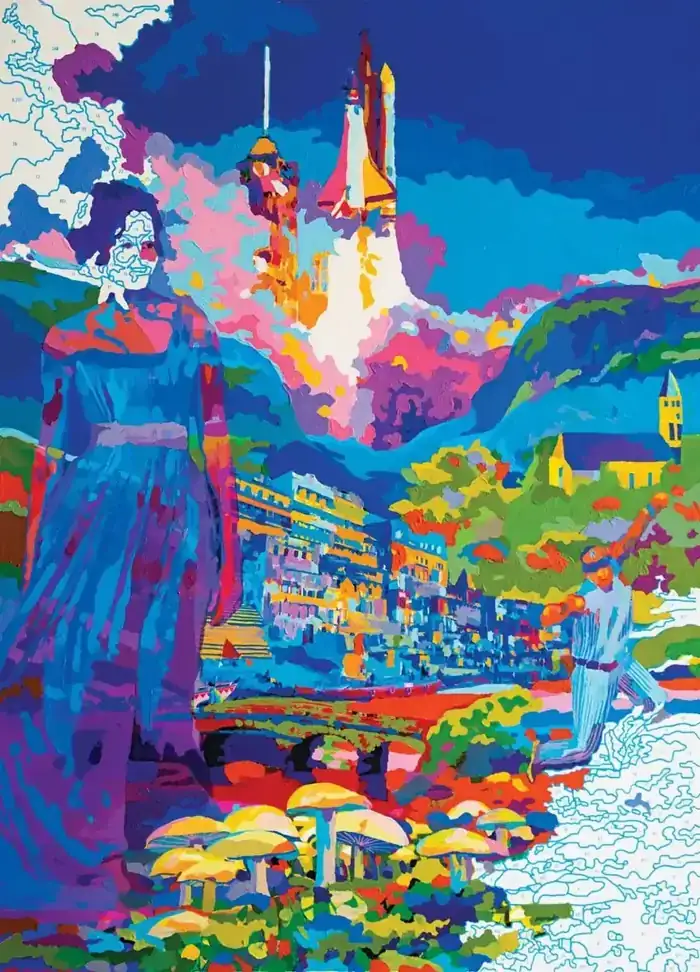
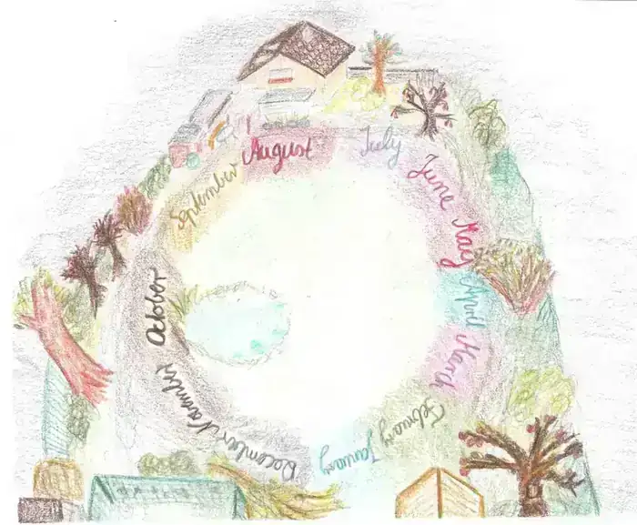

The experience
Synesthesia is a stable, involuntary cross-linking of senses or concepts: digits printed in black that carry a colour, music that has a taste, words that sit at a position in space. Estimates of prevalence run from 1% to 4%, with grapheme–colour the most commonly reported form.
Maps, diagrams and images




The critical word is stable. A synaesthete's colour for the digit 7 does not drift. Ask twice, a year apart, and the answer is the same or nearly so — and that consistency is what turned a curiosity into a research subject.
How it is tested
The standard test is a consistency check: the same stimuli presented months apart, scored for agreement. A second is interference: show a grapheme in the wrong colour and synaesthetes are slower to name it, which is a Stroop effect produced by an experience the experimenter cannot see. A third is perceptual: some forms show measurable effects on visual search or on binocular rivalry, where the synaesthetic colour behaves a little like a real one.
The tests matter because the alternative explanation is metaphor. Everyone associates colours with things loosely; the claim is that for some people the association is automatic, stable and percept-like. Consistency plus interference is what separates the two.
Documented: grapheme–colour synesthesia exists, is stable over years, and produces measurable interference.
Documented: it runs in families, and the specific pairings do not — relatives share the tendency, not the colours.
Contested: whether it is a distinct condition or the extreme end of a continuum that everyone sits on.
Contested: the mechanism. The leading account is reduced pruning of cross-modal connections in infancy; the evidence is suggestive rather than decisive.
Not supported: the popular claim that synaesthesia and creativity are linked. The association is reported, is small, and is confounded by who volunteers for studies.
Why it belongs in this archive
Because it is the counter-example to the archive's usual subject. Here is an extraordinary-sounding claim — that some people see sounds — which turns out to be true, testable, and unremarkable to the people who have it. It is a reminder that 'extraordinary' and 'unevidenced' are different words.
Open resources on this topic
- BookGrapheme learning and grapheme-color synesthesia: toward a comprehensive model of grapheme-color association. — ['Asano, Michiko', 'Yokosawa, Kazuhiko'] · 2013 (Internet Archive, free to read)
- BookThe synesthesia anthology: 2013-2017 — 2017 (Internet Archive, free to read)
- BookIntrasensory Synesthesia In Musical Composition (Internet Archive, free to read)
- PapersOpen-access articles: DOAJ · PubMed Central · Internet Archive Scholar
- BooksPublic-domain and borrowable copies: Open Library · Project Gutenberg · Google Books
Cite this page
Momin, S. (2026). Synesthesia. The Larger World Archive. https://drsamonline.github.io/LARGE_GLOBE/synesthesia.htmlMomin, Sohil. “Synesthesia.” The Larger World Archive, 2026, https://drsamonline.github.io/LARGE_GLOBE/synesthesia.html.Momin, Sohil. “Synesthesia.” The Larger World Archive, 2026. https://drsamonline.github.io/LARGE_GLOBE/synesthesia.html.@misc{synesthesia2026synesthesia,
author = {Momin, Sohil},
title = {Synesthesia},
year = {2026},
howpublished = {The Larger World Archive},
url = {https://drsamonline.github.io/LARGE_GLOBE/synesthesia.html},
note = {Last reviewed 20 November 2026}
}Last reviewed 20 November 2026 · Corrections policy · this page is not peer reviewed
Sources for this page
- Wikipedia, “Synesthesia” — forms, tests and mechanismsen.wikipedia.org
- Wikipedia, “Grapheme–color synesthesia” — the best-studied formen.wikipedia.org
- Wikipedia, “Stroop effect” — the interference paradigm used to test iten.wikipedia.org
- Wikipedia, “Ideasthesia” — the competing account, that the trigger is meaningen.wikipedia.org